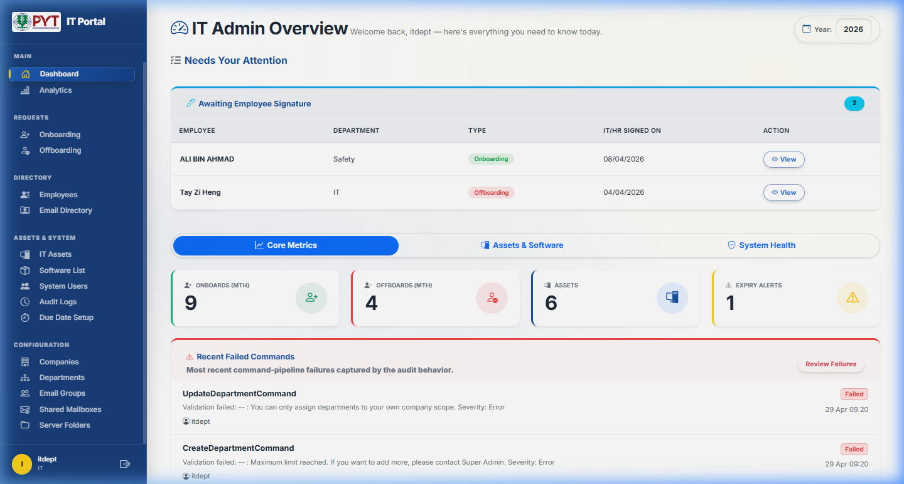
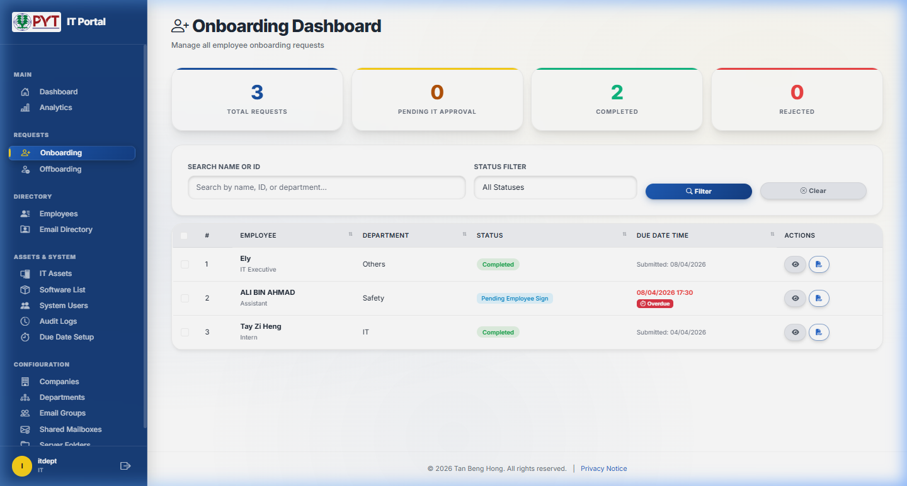
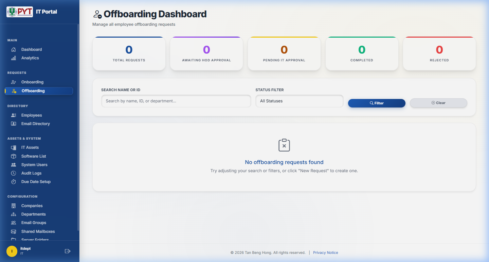
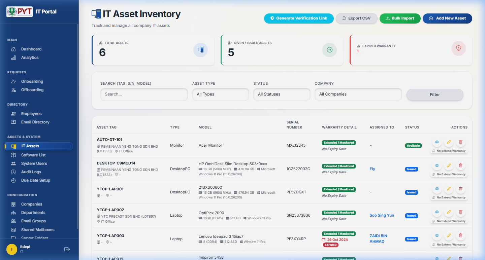
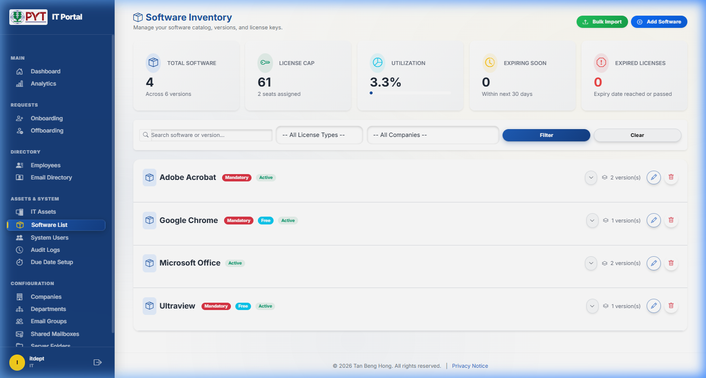

Version 1.0 · April 2026
IT Portal — User Guide
Welcome to the IT Portal System — your company's centralised platform for managing employee onboarding, offboarding, IT assets, and software licenses.
Streamlined multi-step wizards for setting up new joiners and securely off-boarding departing employees.
Real-time inventory of every laptop, desktop, monitor, and software licence across the organisation.
SLA monitoring, audit trails, digital signatures, and trend analytics for leadership visibility.
This guide is written for everyday users. You do not need any technical background to follow the steps described here.
Getting Started — Logging In
Open your web browser and navigate to the IT Portal address provided by your IT department.
Type your assigned username in the first field.
Type your password. Click the 👁 icon to reveal it while typing.
Tick this box to stay logged in on your device.
You will be taken to the Dashboard.
Forgot Your Password?
- Click the Forgot Password? link on the login page.
- Enter your Username and click Submit.
- A one-time passcode (OTP) will be sent to your registered email.
- Enter the OTP on the Verify OTP page within 5 minutes.
- Set a new password on the Reset Password page.
After 3 failed OTP attempts, the code is invalidated — click Resend OTP for a fresh code. After 5 failed login attempts, your account will be temporarily locked.
Your Profile
Click your name at the bottom-left of the sidebar to access your Profile page, where you can:
- Update your display name and job title
- Upload an email signature image (logo block or QR code)
- Draw your reusable digital signature
Dashboard Overview
After logging in, you are taken to the Dashboard — your personalised starting page showing key metrics and action items.

| Section | What It Shows |
|---|---|
| Needs Your Attention | Requests awaiting employee acknowledgement signatures — listed by employee, department, and type. |
| Core Metrics | Monthly onboarding/offboarding counts, total assets, and expiry alerts. |
| Assets & Software | Asset distribution by type/status, software licence utilisation charts. |
| System Health | Active users, audit log entries, recent failed commands. |
Use the Year dropdown (top-right) to switch the reporting period. Click Analytics in the sidebar for advanced charts, department breakdowns, SLA bottleneck analysis, and year-over-year comparisons.
Onboarding — New Employee Setup
The onboarding process is a multi-step wizard that moves through these phases:

Step 1 — Employee Details (HR)
Only users with the HR role can create new onboarding requests.
- From the sidebar, click Onboarding, then + New Onboarding.
- Fill in the new employee's information:
| Field | Required? | Notes |
|---|---|---|
| Full Name | Yes | Maximum 100 characters |
| Employee ID | No | Encrypted for security |
| Designation | No | Job title of the new joiner |
| Department | Yes | Select from dropdown or type custom |
| Company / Branch | Yes | Select from dropdown |
| Desk Number | No | Physical desk location |
| Join Date | Yes | Expected first day of work |
| Email Address | No | Used for acknowledgement email |
| Contact Number | No | Encrypted for security |
| HOD Email | No | Head of Department email |
Agree to the PDPA Consent checkbox, then click Next.
Step 2 — Software, Email Groups & Shared Folders (HR)
- Software Checklist — Tick the required software (Microsoft Office, Adobe, VPN, etc.). Use "Other Software" for unlisted items.
- Email Groups — Select distribution groups the employee should join.
- Shared Mailboxes — Select shared mailboxes (Account, Logistic, Admin, etc.).
- Server Folder Permissions — Select shared folders. Use "Other Folder" for custom entries.
- Click Save as Draft to save progress, or draw your Digital Signature and click Sign & Submit.
You can save a draft at any time and return to it later. Draft requests appear with a Draft badge on the dashboard.
Steps 3–5 — IT Setup Wizard (IT Staff)
Only users with the IT role can perform IT setup steps.
Once HR signs off, the request moves to Pending IT Approval. IT staff can click Start IT Setup to begin a 3-step wizard:
Assign physical IT assets (laptop, monitor, keyboard, etc.) from the inventory. Enter Asset Tag, Serial Number, Brand/Model, and quantity for each item.
Review the software checklist and mark each item as installed. Grant server folder permissions as requested. Add remarks for each section.
Complete the full IT setup checklist (see below), enter remarks, draw your IT Admin Signature, and click Complete Setup.
IT Setup Checklist Items
- Physical Cleaning — Device inspected
- O365 Setup — Microsoft 365 configured
- Windows Login — Domain account created
- Email Setup — Email client configured
- Specific Software — Specialised apps installed
- General Software — Standard bundle installed
- ABC Group — Added to company email group
- Email Mail Group — Department group added
- Domain Join — Device joined to domain
- Shared Drive — Network drives mapped
- Wi-Fi Setup — Wireless configured
- Printer Setup — Printers added
- Scan Folder — Scan-to-folder configured
- VPN Setup — VPN client configured
Employee Acknowledgement
After IT completes setup, the status becomes Pending Employee Sign:
- The employee receives an email with a unique acknowledgement link.
- They review the full onboarding summary and can download the PDF.
- They draw their signature and click Submit Signature.
- The request status changes to Completed.
If the employee lost the email, HR can click Regenerate Token on the request details page to create a new link (the old link becomes invalid).
Tracking Onboarding Progress
From the Onboarding Dashboard, you can:
- Search by employee name, ID, or department
- Filter by status using the dropdown
- Sort columns by clicking column headers
- View details — click the 👁 icon
- Download PDF — click the 📄 icon
- Export CSV and Bulk Export PDFs (HR only)
Requests exceeding the SLA target display an ⏰ Overdue badge.
Offboarding — Employee Exit Process
The offboarding process handles the departure of an employee, ensuring all access is revoked and hardware is returned.

Creating an Offboarding Request (HR)
- From the sidebar, click Offboarding, then + New Offboarding.
- Fill in the departing employee's details: Full Name, Employee ID, Department, Company/Branch, Last Day of Work, Email, HOD Email.
- (Optional) Upload a Resignation Letter.
- Agree to PDPA Consent and click Create.
You can link the offboarding request to the employee's original onboarding record to auto-fill details and help IT know what was originally provisioned.
Approval & Signature Flow
| Step | Who Signs | Status After |
|---|---|---|
| 1 | HR Staff (Requester) | Pending Approval |
| 2 | Second HR User (Checker) | Pending HOD Approval |
| 3 | Head of Department | Pending IT Approval |
| 4 | IT Staff | Pending Employee Sign |
| 5 | Employee | Completed |
IT Deprovisioning (IT Staff)
Once the HOD has signed, IT can proceed by clicking Start IT Setup:
Record returned assets (laptop, accessories), note any damage with photos, complete the IT Deactivation Checklist (O365 deactivate, AD disable, email sign-out, VPN disable, etc.), and record any missing item fines.
Confirm data backup, email backup, email forwarding, licence removal. Add remarks, draw your IT Admin Signature, and click Complete.
IT Asset Management
Only users with the IT role can access the IT Asset module.

Asset Types
Portable computers
Stationary workstations
Display screens
External keyboards
Audio headsets
External cameras
Laptop docks
Any other equipment
Asset Statuses
| Status | Meaning |
|---|---|
| Available | In stock and ready to be assigned to an employee. |
| Issued | Currently assigned to an employee. |
| Under Repair | Being serviced or repaired. |
| Disposed | Retired and disposed of. |
| Lost | Reported lost or stolen. |
Adding a New Asset
- Click + Add New Asset.
- Fill in: Asset Tag (required, unique), Asset Type, Serial Number, Model, Company, Purchase Date, Warranty Expiry, RAM, DDR Type, Storage, Windows Version.
- If status is Issued, select the assigned employee.
- Click Create.
Bulk Import
- Click Bulk Import → Download Template to get the Excel template.
- Fill in the spreadsheet (includes dropdown validation for types and statuses).
- Upload the completed file and click Import.
Each Asset Tag must be unique. Duplicate tags will be skipped during import.
Device Verification
Remotely verify a device's hardware fingerprint:
- Click Generate Verification Link and select an employee.
- Share the generated link or ZIP file with the employee.
- They run the script, which captures the hardware fingerprint and sends it back to the portal.
- A mismatch warning is flagged if the fingerprint differs from the recorded one.
Software & License Management

Software Catalog
The Software Inventory page shows summary cards (Total Software, License Cap, Utilisation %, Expiring Soon, Expired), plus a searchable list of all software titles with badges (Mandatory, Free, Active).
Adding Software & Licences
Click + Add Software. Enter the name and set flags: Mandatory, Free, Active, Has Multiple Versions.
Expand a software title and click Add Version. Enter version name, vendor, support contact, subscription flag, expiry date, contract limit, and company assignment.
Click Manage Keys to add, edit, or assign individual licence keys. Keys can be linked to specific employees. For subscriptions, use Quick Allocate Seat.
The utilisation percentage helps monitor contract limits. Licence keys are encrypted and only visible to IT staff. The system sends automatic email alerts when licences are about to expire.
Understanding Form Statuses
Every request moves through a series of statuses. Here is what each one means in plain language:
| Status | Badge | What It Means |
|---|---|---|
| Draft | Draft | The form has been started but not yet submitted. Only the creator can see and edit it. |
| Pending Approval | Pending Approval | (Offboarding) HR has signed; a second HR user (checker) must approve. |
| Pending HOD Approval | Pending HOD | (Offboarding) Waiting for the Head of Department to review and sign. |
| Pending IT Approval | Pending IT | Approved and waiting for IT to provision or deprovision resources. |
| Pending Employee Sign | Pending Emp. Sign | IT completed their work; employee must sign the acknowledgement. |
| Completed | Completed | All signatures collected. The process is finished. |
| Rejected | Rejected | The request was rejected. The rejection reason is recorded. |
Overdue is not a status — it is a visual indicator. When a request exceeds the SLA target days, an ⏰ Overdue badge appears next to the due date.
Digital Signatures & PDF Export
Each signature is drawn on a digital pad. The image, signer name, and timestamp are recorded with tamper detection (HMAC).
Click the 📄 icon on any request to download a professional PDF. Select multiple rows for bulk PDF export.
Who Signs What
| Form Type | Signature Chain |
|---|---|
| Onboarding | HR (Requester) → IT Admin → Employee |
| Offboarding | HR → HOD → IT Admin → Employee |
Email Notifications
The portal integrates with your company email to send professional notifications at key workflow milestones:
| Event | Recipient | Purpose |
|---|---|---|
| HR submits onboarding | IT Department | Notify IT to begin provisioning |
| IT completes onboarding | Employee | Send acknowledgement link |
| HR submits offboarding | HOD | Request HOD sign-off |
| HOD signs offboarding | IT Department | Notify IT to begin deprovisioning |
| IT completes offboarding | Employee | Send acknowledgement link |
| Request rejected | Original submitter | Inform with rejection reason |
| HOD approval reminder | HOD | Follow-up for pending signatures |
After signing, the system opens an Email Confirmation page where you can review and edit the pre-filled email (To, CC, Subject, Body). Click Preview Attachment to view any included PDF, then click Send Email.
User Roles & Permissions
Create onboarding/offboarding requests, sign off, view employee directory, export CSV reports.
IT setup, manage assets & software, system users, audit logs, settings.
Sign off offboarding requests for department employees, view the offboarding dashboard.
Sidebar Visibility by Role
| Menu Item | HR | IT | HOD |
|---|---|---|---|
| Dashboard | ✅ | ✅ | ✅ |
| Analytics | ✅ | ✅ | — |
| Onboarding | ✅ | ✅ | — |
| Offboarding | ✅ | ✅ | ✅ |
| Employees | ✅ | ✅ | — |
| Email Directory | ✅ | ✅ | ✅ |
| IT Assets | — | ✅ | — |
| Software List | — | ✅ | — |
| System Users | — | ✅ | — |
| Audit Logs | — | ✅ | — |
| Due Date Setup | — | ✅ | — |
| Configuration (Companies, Depts, etc.) | — | ✅ | — |
Reserved Technical Administration Control
The System contains normal Company user roles such as IT, HR, and HOD. In addition, the System may contain a reserved technical administration control used only for limited technical purposes authorised under the applicable agreement.
This reserved technical administration control is not a normal Company user role and is not intended for daily operational use by Company staff. Its purpose may include backup-related controls, quota or usage-limit controls, service-plan controls, authorised troubleshooting, and protection of system stability.
The user guide does not disclose passwords, secret keys, private tokens, privileged routes, credential recovery methods, or internal implementation details for security and confidentiality reasons.
Technical administration activity is purpose-limited. Any support activity involving personal data should be handled only where authorised and necessary for the agreed technical purpose, and should follow applicable Personal Data Protection Act 2010 (PDPA), confidentiality, and security requirements.
Configuration (IT Admin Only)
Manage companies/branches with logos, time zones, business hours, and working day schedules.
Add, edit, or remove departments linked to specific companies.
Manage email distribution groups shown in onboarding forms.
Manage shared mailbox entries (Account, Logistic, IT, etc.).
Manage shared folder paths presented during onboarding.
Configure target days, Tier 1 & Tier 2 escalation, and notification emails.
Create, edit, activate/deactivate user accounts, assign roles and company scopes.
Full action history with filtering, before/after comparisons, CSV export, and failure analytics.
Frequently Asked Questions
General
| Question | Answer |
|---|---|
| I can't log in. What should I do? | Ensure you're typing your username and password correctly (case-sensitive). Use Forgot Password? if needed. If your account is locked, wait for the lockout to expire or contact IT. |
| I see "Access Denied" — why? | Your account doesn't have the required role for that page. Contact IT to request access. |
| Can I use this on my phone? | Yes! The portal is responsive. On smaller screens, the sidebar becomes a slide-out menu via the ☰ button. |
Onboarding
| Question | Answer |
|---|---|
| What fields are required? | Full Name, Department, Company/Branch, and Join Date. All others are optional but recommended. |
| Can I edit after submission? | Yes, as long as the status hasn't reached Pending Employee Sign or Completed. |
| What if I save as draft? | The request is saved with Draft status. Return anytime to continue. |
| How does the employee sign without a portal account? | They receive a unique, secure link via email. No login required — they review, sign, and submit directly. |
| The employee lost the email? | Go to the request Details page, click Regenerate Token, then compose a new email. |
Offboarding
| Question | Answer |
|---|---|
| Can I link to a previous onboarding? | Yes. Select the employee from the link dropdown to auto-fill details. |
| What is "Checker Approval"? | A second HR user (different from the creator) must approve for dual-approval safeguard. |
| Can I upload a resignation letter? | Yes. Use the file upload field when creating the offboarding request. |
| Can I reject a request? | Yes, any approver can reject before the Pending Employee Sign stage. A reason is required. |
IT Assets & Software
| Question | Answer |
|---|---|
| What is an "Asset Tag"? | A unique label physically attached to equipment (e.g., "YTCP-LAP001"). Must be unique system-wide. |
| Can I import from a spreadsheet? | Yes. Click Bulk Import, download the template, fill it in, and upload. |
| What does "No Extend Warranty" mean? | It stops warranty expiry reminders for that asset when you've decided not to renew. |
| What is "Mandatory" software? | Automatically pre-selected on every new onboarding form. Non-mandatory must be manually selected. |
| How do I know if licences are running out? | Check the Utilisation % on the Software page. Auto-alerts are sent before expiry. |
| Can I track individual licence keys? | Yes. Use Manage Keys to add, edit, or assign keys. Keys are encrypted for security. |
Signatures & PDFs
| Question | Answer |
|---|---|
| Is my digital signature legally binding? | Signatures are used for internal tracking with tamper-detection (HMAC). Consult your legal department for enforceability questions. |
| Can I download a PDF of any form? | Yes. Click the 📄 icon on any request. The PDF includes all details, assets, signatures, and timestamps. |
Need Help? Contact your IT Department for technical assistance or account-related queries.